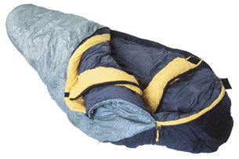

Module 1—Thinking Energy
 Read
Read
specific heat capacity: a physical property of matter
It is the energy required to raise the temperature of one gram of a substance one degree Celsius.
Specific heat capacity is the energy required to change the temperature of one gram of a substance one degree Celsius. As you watched the video “Energy Transfers” you observed that the water in the calorimeter decreased in temperature. Assume that the piece of metal placed into the calorimeter in the video was allowed to cool to –20.0°C in a freezer. Given this information and the data you collected from the video, could you determine the specific heat capacity of the metal object?
 Self-Check
Self-Check
SC 3. Describe how you would use the data to determine the specific heat capacity of the metal object.
Self-Check Answer
SC 3.
Go to the “Specific Heat Capacity Worked Example—Part 1” to
see the answer for this question.
SC 4. Use the data from the experiment to calculate the value for the metal’s specific heat capacity.
Self-Check Answer
SC 4.
Go to the “Specific Heat Capacity Worked Examples—Part 2” to
see the answer for this question.

© 2008 Jupiterimages Corporation
A sleeping bag is given a comfort rating, which is the lowest temperature limit at which the bag provides adequate insulation. Data from two sleeping bags are shown.
|
Insulating Material |
down | polyester |
|---|---|---|
| Comfort Rating | −7°C | −7°C |
| Weight | 1.35 kg | 1.37 kg |
How do you think the two bags compare in terms of their specific heat capacities? Can you identify any assumptions involved in your prediction?
Although sleeping bags can appear to have similar heat capacities and insulating properties, their compositions can be very different. The style, the materials used in construction, and the method of assembly can influence the insulating properties and the comfort rating of sleeping bags.
 Reflect and Connect
Reflect and Connect
Thermal energy transfers between warmer and cooler objects until both objects reach the same temperature. The function of a sleeping bag, or the clothes you wear, is to contain the air around your body that has been warmed from heat your body has emitted. Materials that provide better insulation from the cold tend to prevent trapped air that has been heated by the body from escaping. It is common for winter campers to place a vapour bag within a sleeping bag. The vapour bag fits inside the sleeping bag like a sleeve and is designed to transfer perspiration (water) away from the air surrounding the body.
RC 1. The specific heat capacity of water is 4.19 kJ/(kg•°C), while the specific heat capacity of air is 1.01 kJ/(kg•°C). Use this data to explain how using a vapour bag can increase a person's comfort in a sleeping bag.